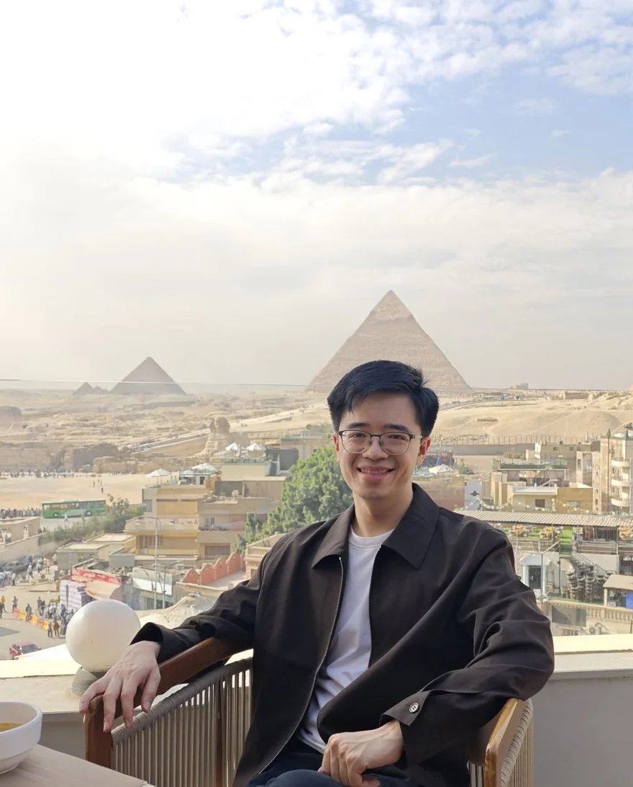
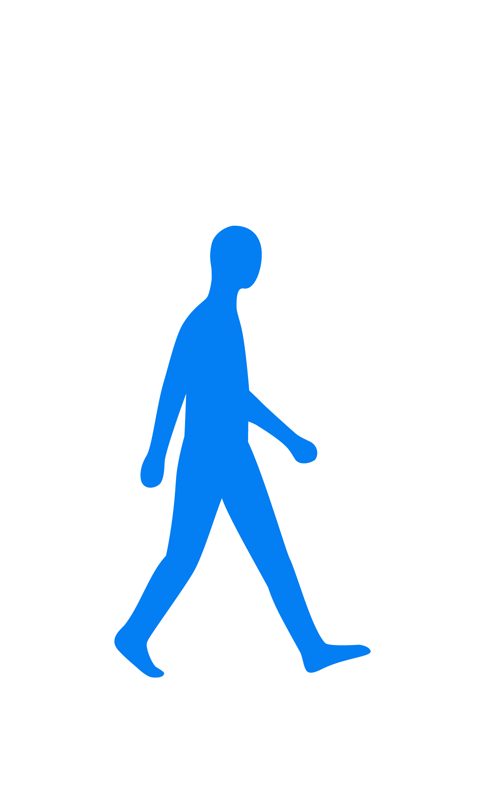
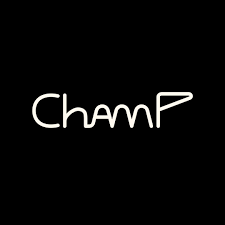
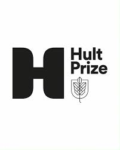
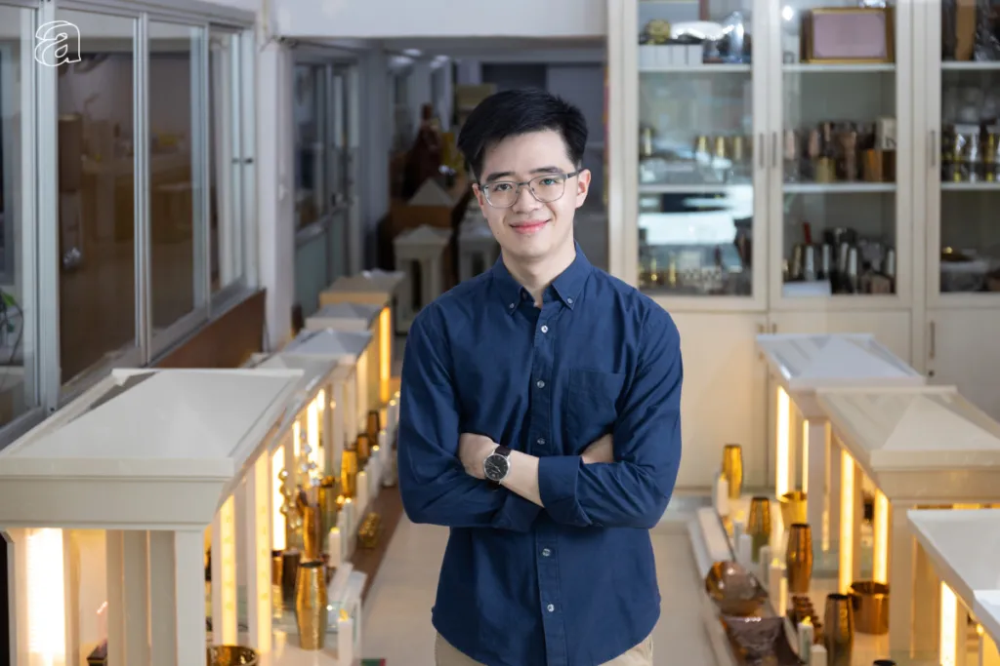

TEDxChulalongkorn
Ideas and event community
I shape ventures across community, space, wellbeing, and technology. Different fields, connected by a practical belief: thoughtful systems can help people live with more clarity.
Founder · Builder · Community

About
My role changes from project to project: sometimes founder, sometimes strategist, sometimes the person connecting ideas and helping a team move forward.
What stays constant is the way I work. I listen closely, make complexity clearer, and build with enough care that the result feels useful as well as meaningful.
Education
BBA, Financial Analysis & Investment
Chulalongkorn University · Second-Class Honors
Earlier chapters
Communities and competitions that shaped how I build today.
Ideas and event community

Youth leadership community

Peer coaching experience

1st runner-up · APAC participant
Selected projects

Close to the work
Building from inside the real operation, with the people and details that give each project its character.
In the work
The connecting thread
01
Find the real question, remove noise, and give the work a form people can understand.
02
Systems matter, but they should serve the people living and working inside them.
03
Prefer useful foundations, thoughtful details, and steady progress over temporary spectacle.
Connect
Find Mac Nattapong on Facebook, or reach me directly through Instagram, LINE, and email.